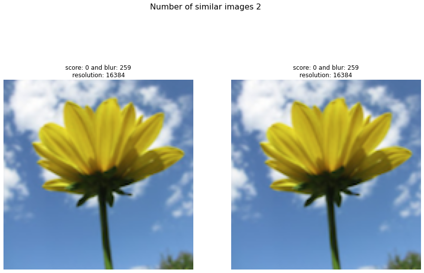
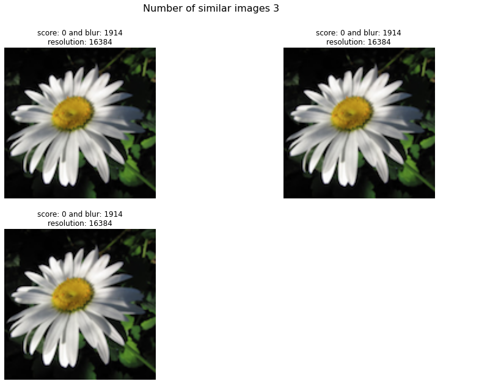
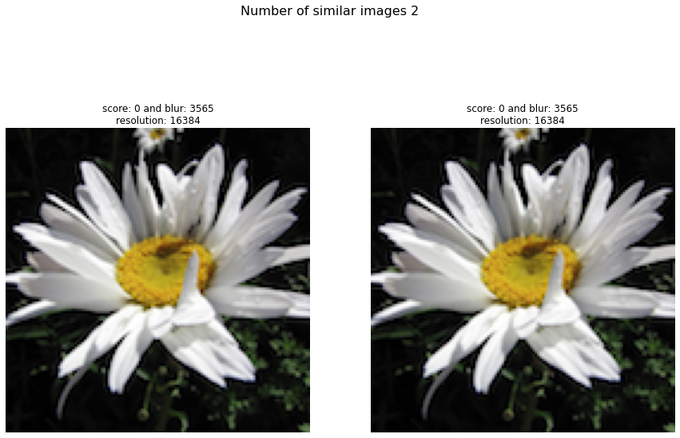
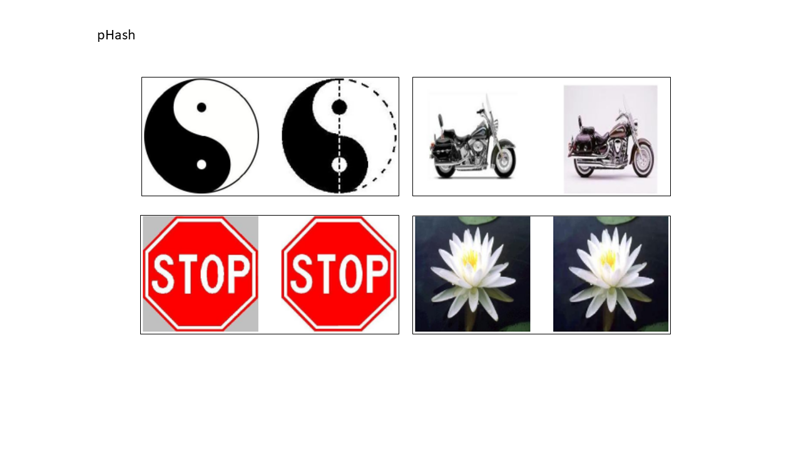

Flowers dataset
Analyze for similar flowers in the example dataset. Load the data and initialize a model with phash.
# Import library
from undouble import Undouble
# Init with default settings
model = Undouble(method='phash', hash_size=8)
# Import example data
targetdir = model.import_example(data='flowers')
# Importing the files files from disk, cleaning and pre-processing
model.import_data(targetdir)
# Compute image-hash
model.compute_hash()
# Group images with image-hash <= threshold
model.group(threshold=0)
Plot clusters
# Plot the images model.plot()
 |
 |
 |
Get identical images
# Import library
for i, group in enumerate(model.results['select_pathnames']):
print('----------------------------GROUP %s----------------------------' %i)
print(group)
Move files
The move function undouble.undouble.Undouble.move() will systematically move the images.
A threshold of 0 will group images with an identical image hash. However, the threshold of 10 showed the best results when undoubling my personal photo deck because photos, such as from bursts, were also grouped.
Before moving any of the images, the resolution and blurness of all images that are part of a group are checked.
The image in the group with the highest resolution will be copied, and all other images are moved to the undouble subdirectory.
model.move()
# >Wait! Before you continue, you are at the point of physically moving files!
# >[7] similar images are detected over [3] groups.
# >[4] images will be moved to the [undouble] directory.
# >[3] images will be copied to the [undouble] directory.
# >Type <ok> to proceed.
101 objects dataset
I utilized the Caltech 101 [1] dataset and saved it to my local disk. I will analyze the results with aHash, pHash, dHash, and Wavelet hash. The Caltech dataset contains 9144 real-world images belonging to 101 categories. About 40 to 800 images per category. The size of each image is roughly 300 x 200 pixels. For the input to undouble, we can simply provide the path location where all images are stored, and all subdirectories will be recursively analyzed too. Note that this dataset does not contain ground truth labels with identical images labels.
# Import library
from undouble import Undouble
# Initialize model
model = Undouble(method='phash', hash_size=8)
# Import example data
targetdir = './101_ObjectCategories'
# Importing the files files from disk, cleaning and pre-processing
model.import_data(targetdir)
# Compute image-hash
model.compute_hash()
# [undouble] >INFO> Extracting images from: [D://magweg/101_ObjectCategories]
# [undouble] >INFO> [9144] files are collected recursively from path: [D://magweg/101_ObjectCategories]
# [undouble] >INFO> [9144] images are extracted.
# [undouble] >INFO> Reading and checking images.
# [undouble] >INFO> Reading and checking images.
# 100%|██████████| 9144/9144 [00:29<00:00, 305.49it/s]
# [undouble] >INFO> Extracting features using method: [ahash]
# 100%|██████████| 9144/9144 [00:01<00:00, 5826.17it/s]
# [undouble] >INFO> Build adjacency matrix with ahash differences.
# Group images that are identical in image-hash, i.e. those with a hash difference of 0.
model.group(threshold=0)
# print([*model.results.keys()])
# * img: Preprocessed images
# * pathnames: Absolute path location to image file
# * filenames: Filename
# * select_pathnames: Selected path locations that have image-hash score <= threshold
# * select_scores: Image-hash scores of the selected images
# Plot the marked images
model.plot()
# Move the files
model.move()
Average hash results
The average hash function detected 135 groups that could be linked to 335 images with an identical hash (threshold=0) based on the input hash size of 8 (64-bit). Despite identical images being detected, most of the groups showed collisions such as the top and bottom left, and/or near-identical images, such as the motorbikes. By increasing the hash size to 16 (256-bit), 28 groups for 64 images were detected. No collisions were present but only some near-identical images, such as the motorbikes.
|

Differential hash results
The differential hash function detected 28 images that could be linked to 31 images with an identical hash (threshold=0). A visual inspection showed no collisions but near-identical images (two motorbikes) were detected. By increasing the hash size to 16 (256-bit), 8 groups for 16 images were detected. No collisions were present but only some near-identical images, such as the motorbikes. By increasing the hash size to 16 (256-bit), 8 groups for 16 images were detected. No collisions and no near-identical images were present only images that are visually similar.
|

Perceptual hash results
The perceptual hash function detected 38 groups that could be linked to 41 images with an identical hash (threshold=0). A visual inspection showed no collisions but near-identical images were detected, such as the motorbikes, as illustrated in the figure below. By increasing the hash size to 16 (256-bit), 10 groups for 20 images were detected. No collisions and no near-identical images were present only images that are visually similar.
 |
Haar wavelet hash results
The wavelet hash function detected 141 groups that could be linked to 513 images with an identical hash (threshold=0) based on the input hash size of 8 (64-bit). A visual inspection showed that almost all groups contained either collisions or near-identical images. Who had known that a strawberry could have a similar image-hash as the motorbike? By increasing the hash size to 16 (256-bit), 25 groups for 51 images were detected. No collisions were present but only some near-identical images, such as the motorbikes.
|

References
[1] L. Fei-Fei, R. Fergus, and P. Perona. Learning generative visual models from few training examples: an incremental Bayesian approach tested on 101 object categories. IEEE. CVPR 2004, Workshop on Generative-Model Based Vision. 2004